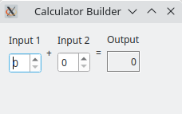

Calculator Builder
Creating a user interface from a Qt Designer form at run-time.

We use the form created in the Calculator Form example to show that the same user interface can be generated when the application is executed or defined when the application is built.
Preparation
The Calculator Form example defines a user interface that we can use without modification. In this example, we use a resource file to contain the calculatorform.ui file created in the previous example, but it could be stored on disk instead.
To generate a form at run time, we need to link the example against the QtUiTools module library. The project file we use contains all the necessary information to do this:
target_link_libraries(calculatorbuilder PUBLIC
Qt::Core
Qt::Gui
Qt::UiTools
Qt::Widgets
)
The UI file is loaded from a resource:
set(calculatorbuilder_resource_files
"calculatorform.ui"
)
For qmake:
RESOURCES = calculatorbuilder.qrc SOURCES = main.cpp QT += widgets uitools
All the other necessary files are declared as usual.
Loading the Calculator Form
We will need to use the QUiLoader class that is provided by the libQtUiTools library, so we first ensure that we include the header file for the module:
#include <QtUiTools>
We create a static helper function that creates a top level widget and loads the user interface that we retrieve, via a QFile object, from the example's resources:
static QWidget *loadCalculatorForm(QWidget *parent = nullptr) { QUiLoader loader; QFile file(u":/forms/calculatorform.ui"_s); if (!file.open(QFile::ReadOnly)) return nullptr; QWidget *formWidget = loader.load(&file, parent); file.close(); if (formWidget == nullptr) return nullptr;
By including the user interface in the example's resources, we ensure that it will be present when the example is run. The loader.load() function takes the user interface description contained in the file and constructs the form widget as a child widget of the CalculatorForm.
We are interested in three widgets in the generated user interface: two spin boxes and a label. For convenience, we retrieve pointers to these widgets from the widget that was constructed by the FormBuilder, and we record them for later use. The findChild() template function allows us to query widgets in order to find named child widgets.
auto *inputSpinBox1 = formWidget->findChild<QSpinBox*>(u"inputSpinBox1"_s);
auto *inputSpinBox2 = formWidget->findChild<QSpinBox*>(u"inputSpinBox2"_s);
auto *outputWidget = formWidget->findChild<QLabel*>(u"outputWidget"_s);
The slot that modifies the output widget provided by the form is defined in a similar way to that in the Calculator Form example, except that we use a lambda, capturing the widgets found:
auto updateResult = [inputSpinBox1, inputSpinBox2, outputWidget]()
{
const int sum = inputSpinBox1->value() + inputSpinBox2->value();
outputWidget->setText(QString::number(sum));
};
QObject::connect(inputSpinBox1, &QSpinBox::valueChanged, formWidget, updateResult);
QObject::connect(inputSpinBox2, &QSpinBox::valueChanged, formWidget, updateResult);
The form widget is added to a layout, and the window title is set:
auto *layout = new QVBoxLayout(&w); layout->addWidget(formWidget); w.setWindowTitle(QCoreApplication::translate("CalculatorForm", "Calculator Builder"));
The advantage of this approach is that we can replace the form when the application is run, but we can still manipulate the widgets it contains as long as they are given appropriate names.
However, loading a form at runtime incurs a runtime cost compared to converting it to C++ code using the User Interface Compiler (uic) tool.